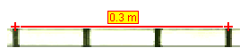

The calibration stick and calibration tape are the most commonly used tools for calibrating the video scale--i.e., the ratio of the world distance in meters (or any desired length unit) to the image distance in pixels between two points. The world length of a calibration stick or tape is displayed in a readout and in a length field on the toolbar. For either tool, calibrating the video is simply a matter of setting this world length to a known value--see Calibrating a video for details.
The difference between a calibration stick and a calibration tape is how its world length behaves when an end is dragged. For a calibration stick the world length remains fixed (thus changing the video scale). For a calibration tape the world length changes so that the video scale remains fixed. (The easiest way to understand this difference is to create both, place them side by side, and then for each drag an end and/or set the world length and observe the change in the other). The discussion below refers to a calibration stick but, except for this difference, applies to both tools.
A calibration stick or tape can also be used to correct for tilt in the video image.
Since a calibration stick or tape is a track, it has a track menu that is accessible in the Tracks menu on the menu bar or by right-clicking the main video view.
Click the arrow on the Calibration button on the toolbar and select New|Calibration Stick to create a new calibration stick. If desired, you can create more than one stick. Show or hide the calibration stick (along with other calibration tools, if any) by clicking the main part of the Calibration button.
The calibration stick or tape is initially placed near the center of the video image, and its world length is determined using the current scale. The world length and angle from the x-axis are displayed on the toolbar.


To change the world length, click the readout and enter the desired length in arbitrary units. Do not include the units when entering a world length. You can also enter a world length in the length readout on the toolbar.


To change the pixel length (and thus the scale), drag either end of the stick. To move the entire stick without changing the scale, drag the middle.


To calibrate a video, first drag the ends of the calibration stick to a video feature with known length (for example, a meter stick). Then click the readout to select it and enter the known length (but do not include units). For example, in the figures below a calibration stick is used to set the scale in meter units using a video image of a white PVC pipe with black stripes every 10 cm.

a. Drag the ends of the uncalibrated stick to the desired image positions

b. Click the readout to select it

c. Enter the known distance (in this case 0.3, since units are meters)

d. Completed calibration
The calibration stick also displays its angle relative to the +x-axis on the toolbar. By setting this angle, you can correct for camera tilt when shooting a video.


To correct for tilt, drag the ends of the calibration stick so that it is parallel to a video feature that is known to be horizontal in the real world. Then enter an angle of zero into the angle field. This will rotate the +x-axis to the true horizontal. (Note: the same procedure can be used to set the +x-axis to any known angle.)


By default, the calibration stick has a fixed position--that is, its end positions are the same in all frames. Uncheck the Fixed checkbox in its track menu to allow the position to vary independently from frame to frame.
Note that the calibration stick is always unfixed when the scale of the coordinate system is unfixed since its pixel length must change to keep its world length constant when the scale changes.
Locking the calibration stick prevents it from making any changes to the scale. Lock the stick by turning on the Locked property in its track menu.